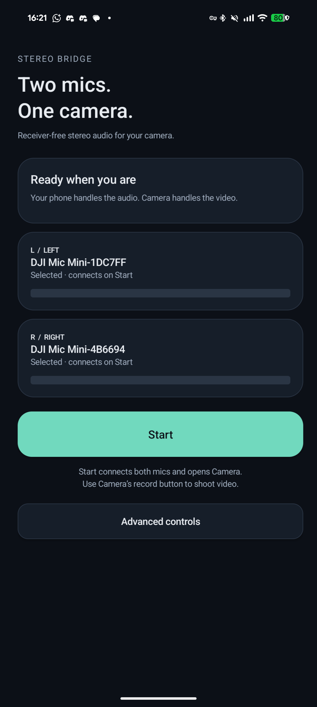

Two mics.
One camera.
Connect two original DJI Mic Mini transmitters directly to your phone. Send separate left and right audio to your camera, without a receiver.
Free, open source, on-device audio. Light and dark themes follow your phone.
Tested on Pixel 8 Pro / Android 17 with two original DJI Mic Mini transmitters and stock Pixel Camera. Other configurations are unverified. Camera routing requires Wireless debugging and one-time local pairing.

Start in Stereo Bridge. Record in Camera.
- Pair both transmitters in Android Bluetooth settings.
- Tap Start. Follow the permissions and first-time camera setup guide.
- Camera opens when both inputs are live. Use Camera’s record button to shoot video.
- Stop the bridge in Stereo Bridge or its notification when finished.
Controls when you need them
Independent microphone meters, gain, mute, left/right swap and an audio-only preview live under Advanced. A visible notification provides Stop while Camera is open. Allow connection alerts to see failures.